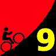
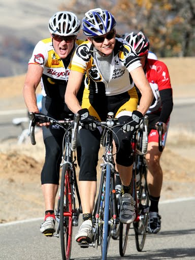

|  |
2009 Low-Key Hillclimbs Week 9 Results: Mt Hamilton 26 Nov 2009 |
|  |
| Beverly Chaney dishes out the pain on Mt Hamilton (Joey) |
Thanks to all who came out for what was a spectacular day for climbing! Today was the second highest turnout ever for a Low-Key, following 1997 Montebello, a wonderful thing on a fine Thanksgiving morning. And a very fine morning it was: if this is sounding like major deja-vu, it's because every single climb in this year's series has experienced near-perfect weather: a perfect 9 for 9 in '09.
And the climbing today was certainly exciting. Ryan Sherlock, fresh from his second overall in the 2009 Irish national hillclimb championships, broke away from the lead group to take the W with an excellent time of 72:17. Brian Lucido, showing two wheels are indeed faster than none after his run up Alba last week, finished second just ahead of 2009 Low-Key men's point leader Justin Lucke. Justin easily held onto his lead in the overall, however. Congratulations Justin! Watch out for Justin at San Bruno on the new year! Meanwhile Mark Edwards finished fourth, while Low-Key all-time great, and 2008 Hamilton winner Tracy Colwell was fifth.
Among the women, Roaring Mouse's Beverly Chaney was first with a solid 89:14. Series points leader Janet Martinez was second, while Kelly Crowley finished third. Janet held on to her series points lead, so congratulations Janet on repeating her 2007 first place! Mary Ellen Allen and Laura Hipp both finished strong today to top off the overall 2009 "podium".
We had a great junior turnout today, an amazing ten altogether, led by Yuma Koishi, the 2008 Low-Key top junior. 2009 top junior Andre Swart posted up over 103 points today, easily his best result this season, to post up an excellent 505 points for the series, setting the Low-Key record for most junior points in a season. Nicely done Andre!!!
And among the new records set this year: Mark King shattered Joe Lansing's record from 1998 with an excellent time of 116:46. Low-Key loves tricycles, and hopes to see more in the future!
Then congratulations are due to Lisa Emmerich who not only PR'ed the climb today, but also locked down the all-important 2009 Endurance Award! Then there's the most improved: Michael Ahern put up a season-best 88.7 points to take the final lead in the season-most-improved competition, while Ryan Gibson made a strong run at Ken Gellardo's lead in the "Improved since Last Year" award. Ryan averaged an amazing 14 points more this year than in 2008.
Thanks again to coordinator Kevin Winterfield who flew out from the frigid East to coordinate today, and thanks all the volunteers, and especially the photographers! Wow -- a gorgeous day today made for truly spectacular photos.
That's it for 2009! We hope to see many of you at the Awards Ceremony coming up in a few weeks! Watch for announcements on these pages.
Thanks to coordinator Kevin Winterfield, with help from Patt Baenen, Michael Barnes, Bill Davis, Mrs. Gibson, Michael Grundmann, Josh Hadley, Martin Hyland, Howard Kveck, Carl Nielson, Pat Parseghian, Eric Sorenson, Adam Tow, and Mrs. Gibson's father for making today's climb possible!median time = 57:26
pl # rider team category time mph fph score 1 6 Bill Bushnell Low-Key Hybrid 57:26 19.22 4596 100.00
median time = 94:55
pl # rider team category time mph fph score 1 835 Ryan Sherlock Cycle Ways Ireland 72:17 15.27 3651 131.31 2 214 Brian Lucido Sr's & Mr's of No Mercy 30+ 73:24 15.04 3596 129.31 3 40 Justin Lucke LGBRC 35+ 73:32 15.01 3589 129.08 4 101 Mark Edwards Bike Trip 45+ 73:53 14.94 3572 128.47 5 800 Tracy Colwell Team Colwell 35+ 74:13 14.88 3556 127.89 6 71 Greg McQuaid San Jose Bike Club 35+ 74:19 14.86 3552 127.72 7 516 Tom Roberts San Jose Bike Club 40+ 76:04 14.51 3470 124.78 8 1 Dan Connelly Low-Key 40+ 76:27 14.44 3452 124.16 9 249 Chris Ott Zenn Racing 40+ 77:09 14.31 3421 123.03 10 283 Geoff Drake Bike Trip 50+ 77:15 14.29 3417 122.87 11 7 James Porter Western Wheelers 3 77:17 14.29 3415 122.82 12 836 Colin Brown Team Kill Troubled Youth 78:34 14.05 3359 120.81 13 201 Rune Dahl Western Wheelers 45+ 78:48 14.01 3349 120.45 14 156 Rich Hill LGBRC 40+ 80:19 13.75 3286 118.18 15 144 Andy Brisnehan Western Wheelers 50+ 80:37 13.69 3274 117.74 16 32 Nils Tikkanen Bike Trip 3 80:50 13.66 3265 117.42 17 796 Michael Robles UCSD 45+ 81:04 13.62 3256 117.08 18 23 Ron Brunner Low-Key Commuter 81:05 13.62 3255 117.06 19 827 Josh Powell 81:30 13.55 3239 116.46 20 798 Maurice Monge San Jose Bike Club 20+ Cat 3 82:06 13.45 3215 115.61 21 192 Michael Simos LGBRC 35+ 82:06 13.45 3215 115.61 22 42 Nick Pelly Google 82:12 13.43 3211 115.47 23 852 Alan Nevin Thirsty Bears 35+ 82:26 13.39 3202 115.14 24 120 Peter Mehlitz 45+ 82:28 13.39 3201 115.10 25 33 Martin Hyland Western Wheelers 50+ 82:33 13.37 3197 114.98 26 315 Tom Gardin 45+ 82:39 13.36 3193 114.84 27 754 Yuma Koishi San Jose Bike Club Junior 83:11 13.27 3173 114.11 28 834 Dai Sieh Webcor/Alto Velo 4 83:48 13.17 3150 113.27 29 138 Carmelo Rios Plus 3 50+ 84:24 13.08 3127 112.46 30 839 Joe Pugliese Kahala La Grange 35+ Cat 4 84:32 13.06 3122 112.28 31 522 Steve Fielding Sr's & Mr's of No Mercy 45+ 84:37 13.05 3119 112.17 32 291 Tim Sawyer Bike Trip 45+ 84:37 13.05 3119 112.17 33 113 Kevin Comerford Commuter 85:31 12.91 3086 110.99 34 59 Scott Martin Bike Trip 50+ 86:41 12.74 3045 109.50 35 74 Benoit Pelczar Bike Trip 35+ 86:42 12.73 3044 109.48 36 770 John Pidoli 45+ 86:48 12.72 3041 109.35 37 276 Adam Brinkman 25-29 86:55 12.70 3037 109.20 38 316 Christian Paquet Doogie 50+ 87:34 12.61 3014 108.39 39 619 Klaus Fleischmann 40+ 87:42 12.59 3010 108.23 40 300 Liam Stewart Team Roaring Mouse 87:47 12.58 3007 108.13 41 94 Nathan Cauffman UID 30+ 87:54 12.56 3003 107.98 42 136 Fred Egley Dos Egley's 45+ 88:15 12.51 2991 107.55 43 420 Dave Rossow Webcor/Alto Velo 35+ 88:41 12.45 2976 107.03 44 726 Bob Montague Bike Trip 45+ 89:08 12.39 2961 106.49 45 819 Erik Salander Pen Velo/Pomodoro 89:11 12.38 2960 106.43 46 807 Denin Sahovic LGBRC 89:14 12.37 2958 106.37 47 45 Sean Broeder Silicon Valley Triathlon 45+ 89:20 12.36 2955 106.25 48 75 Dan Cervelli Palantir 89:22 12.35 2953 106.21 49 414 David Quincy Sponge Bob 89:36 12.32 2946 105.93 50 774 Andrew Biscardi San Jose Bike Club Junior 89:36 12.32 2946 105.93 51 176 Amir Weiss LGBRC 35+ 89:41 12.31 2943 105.84 52 56 David Vrane SLACer 45+ 89:55 12.28 2935 105.56 53 413 John Richardson Over The Hill 55+ 90:12 12.24 2926 105.23 54 263 Nicholas Konwest Fresh Fish 90:31 12.20 2916 104.86 55 738 Zeke Mostov Team Swift Junior 90:47 12.16 2907 104.55 56 73 Vince Cummings 90:50 12.15 2906 104.50 57 788 Andy Wright IC3 35+ 90:56 12.14 2903 104.38 58 787 J.D. Daniels Eden Bikes 91:03 12.13 2899 104.25 59 847 Akin Dirik Webcor/Alto Velo 40+ 91:09 12.11 2896 104.13 60 859 Matt Rodnick 45+ 91:56 12.01 2871 103.25 61 114 Andre Swart Ryro Junior 91:59 12.00 2869 103.19 62 100 Eric Murray Webcor/Alto Velo 45+ 92:27 11.94 2855 102.67 63 132 George Junour Santa Cruz 92:27 11.94 2855 102.67 64 402 Bill Preucel Sr's & Mr's of No Mercy 45+ 92:52 11.89 2842 102.21 65 20 Alan Weatherall San Jose Bike Club 45+ 4 92:52 11.89 2842 102.21 66 197 Ryan Gibson Google 92:53 11.89 2842 102.19 67 830 Tim Dent Team Roaring Mouse 4 93:10 11.85 2833 101.88 68 790 Myles Cowherd 40+ 93:23 11.82 2826 101.64 69 823 Peter Tapscott Webcor/Alto Velo 93:44 11.78 2816 101.26 70 512 Russ McCrary Sr's & Mr's of No Mercy 50+ 93:49 11.77 2813 101.17 71 792 Travis Alongi Team Roaring Mouse 93:58 11.75 2809 101.01 72 799 Don Melosh Pen Velo/Pomodoro 94:05 11.73 2805 100.89 73 96 Phil Dubach Western Wheelers 35+ 94:19 11.71 2798 100.64 74 607 Rick Ferrell 50+ 94:23 11.70 2796 100.57 75 269 Jeff Shute Google 30+ 94:34 11.67 2791 100.37 76 87 Chuck Spiteri Pen Velo/Pomodoro 50+ 94:43 11.66 2787 100.21 77 722 Jonathan Walden 45+ 95:07 11.61 2775 99.79 78 523 John Malloy Grizzly Peak Cyclists 40+ 95:20 11.58 2769 99.56 79 750 Kyle Zamparglioni San Jose Bike Club Junior 95:59 11.50 2750 98.89 80 111 Gary Griffin Bike Trip 55+ 96:02 11.50 2748 98.84 81 758 Daniel Farinha San Jose Bike Club Junior 96:03 11.49 2748 98.82 82 124 Frederick Stamm Pen Velo/Pomodoro 55+ 96:05 11.49 2747 98.79 83 783 David Christiansen Bike Forums 96:14 11.47 2743 98.63 84 803 Ken Straub Bikeaholics 96:40 11.42 2730 98.19 85 824 David Jevans 40+ 96:59 11.38 2721 97.87 86 141 Franz Kelsch UltraCycle.net 60+ 97:03 11.38 2720 97.80 87 54 Barry Burr Two legs to stand on 50+ 97:19 11.34 2712 97.53 88 780 Michael Yamada Western Wheelers 45+ 97:23 11.34 2710 97.47 89 69 Nic Brummell Atlas 45+ 97:53 11.28 2696 96.97 90 155 Larry Klein Jerry 45+ 98:00 11.27 2693 96.85 91 840 Peter Heller Old Guys Finish 50+ 98:03 11.26 2692 96.80 92 762 Gento Kusno San Jose Bike Club Junior 98:06 11.25 2691 96.76 93 766 Blas Garcia VMG 30+ 98:28 11.21 2681 96.39 94 508 Oscar Garcia Castelli 30+ 98:54 11.16 2669 95.97 95 122 Mark Powers Pen Velo/Pomodoro 50+ 99:26 11.10 2654 95.46 96 742 Frank Spiteri Pen Velo/Pomodoro 3 99:27 11.10 2654 95.44 97 35 Stephen Fong San Jose Bike Club 40+ 99:45 11.07 2646 95.15 98 802 Jay Dillon Rio Strada Racing 35+ Cat 4 100:08 11.03 2636 94.79 99 848 Ruedi Brunner 100:53 10.94 2616 94.09 100 855 Jesus Garcia San Jose Bike Club 25-29 101:11 10.91 2609 93.81 101 706 Vincent Juarez San Jose Bike Club 4 102:04 10.82 2586 92.99 102 185 Pete Petroski Western Wheelers Beyond 102:19 10.79 2580 92.77 103 782 David Finch San Jose Bike Club 65+ 104:02 10.61 2537 91.24 104 161 Mike Salameh 55+ 104:08 10.60 2535 91.15 105 856 Ralph Page Team Red Suspenders 50+ 104:22 10.58 2529 90.95 106 784 Grant Gruber 104:28 10.57 2527 90.86 107 64 Han Wen 40+ 105:09 10.50 2510 90.27 108 174 Keith Devlin Western Wheelers 60+ 105:38 10.45 2499 89.85 109 107 Richard Allen Sr's & Mr's of No Mercy 60+ 106:48 10.34 2471 88.87 110 409 Mike Ahern LGBRC 40+ 107:00 10.32 2467 88.71 111 51 Richard Contreras 50+ 107:24 10.28 2458 88.38 112 68 Jan Berka 107:37 10.26 2453 88.20 113 154 Eric Sorenson Bikeforums.net 35+ 107:46 10.24 2449 88.08 114 734 Will Brinckerhoff 60+ 108:25 10.18 2434 87.55 115 791 Paul O'Reilly Pen Velo/Pomodoro 109:23 10.09 2413 86.77 116 21 Kley Cardona ACTC 45+ 109:24 10.09 2413 86.76 117 38 Thomas Preisler LGBRC 50+ 109:30 10.08 2410 86.68 118 815 Clark Natwick Pen Velo/Pomodoro 110:19 10.01 2393 86.04 119 119 Gary Swart Ryro Senior 110:47 9.97 2382 85.68 120 808 Mike Deitchman Silicon Valley Triathlon 111:23 9.91 2370 85.22 121 251 Christopher Olson Google 5 111:37 9.89 2365 85.04 122 718 Jeromy Cottell Pen Velo/Pomodoro 3 111:42 9.88 2363 84.97 123 240 Jerry Hitchcock 50+ 113:56 9.69 2317 83.31 124 70 Garry Chinn Silicon Valley Triathlon 115:25 9.57 2287 82.24 125 702 Mark King catrike Trike 116:46 9.45 2260 81.29 126 844 Aaron Thomas 116:53 9.45 2258 81.21 127 828 Jarret St. Aubin 3 117:37 9.39 2244 80.70 128 730 Brent Bertsch San Jose Bike Club Elite 117:40 9.38 2243 80.67 129 105 Mark Elstron San Jose Bike Club 5 119:01 9.28 2218 79.75 130 322 Aaron Thompson Spike the Wonder Dog 119:37 9.23 2207 79.35 131 843 Aaron Shuler Junior/16 119:51 9.21 2202 79.20 132 794 Andy Cedilnik 30+ 120:22 9.17 2193 78.86 133 126 John Conklin 40+ 122:07 9.04 2161 77.73 134 535 Jim Tappan Self 50+ 122:08 9.04 2161 77.72 135 778 Oscar Gonzalez San Jose Bike Club Junior 123:16 8.96 2141 77.00 136 820 Jim Wholey Western Wheelers 60+ 123:16 8.96 2141 77.00 137 117 Bob Corman Spike the Wonder Dog 50+ 123:28 8.94 2138 76.88 138 89 Bob Gumaer UID 50+ 126:16 8.74 2090 75.17 139 822 Yong Sohn ACTC 40+ 128:01 8.62 2062 74.14 140 806 David Hanel 35+ Cat 4 129:36 8.52 2037 73.24 141 851 Stephen Bantillo 45+ 130:01 8.49 2030 73.00 142 714 Christian Hilty Navy Team 40+ 131:19 8.41 2010 72.28 143 811 James Thompson San Jose Bike Club 132:19 8.34 1995 71.73 144 253 Chris Chang Old & slow 45+ 132:19 8.34 1995 71.73 145 371 Jeroem Meiier 35+ 133:04 8.30 1984 71.33 146 306 Joseph Maurer SF Randonneurs 60+ 137:49 8.01 1915 68.87 147 786 Mark Edington 45+ 137:56 8.00 1914 68.81 148 818 William White Bacon 35+ 142:39 7.74 1850 66.54 149 816 Andy Giang Junior 144:20 7.65 1829 65.76 150 795 Fred Butts Low-Key 144:22 7.65 1828 65.75 151 831 Alan Griffin Alta Alpina 151:28 7.29 1743 62.67 152 308 Hayrettin Kolukisaoglu Novice 164:21 6.72 1606 57.75
median time = 110:25
pl # rider team category time mph fph score 1 134 Beverly Chaney Team Roaring Mouse Ladies 89:14 12.37 2958 123.75 2 102 Janet Martinez Sr's & Mr's of No Mercy 40+ 92:02 12.00 2868 119.98 3 50 Kelly Crowley Team Rwanda 50+ 94:29 11.68 2794 116.87 4 37 Laura Hipp Western Wheelers 98:09 11.25 2689 112.51 5 411 Leah Toeniskoetter Turning Wheels for Kids 98:16 11.23 2686 112.37 6 77 Mary Ellen Allen Sr's & Mr's of No Mercy 55+ 98:21 11.23 2684 112.28 7 8 Lucia Mokres LGBRC 103:41 10.65 2546 106.50 8 55 Rikke Preisler Sr's & Mr's of No Mercy 30+ 104:51 10.53 2517 105.32 9 301 Laura Schuster Silicon Valley Triathlon 40+ 109:09 10.11 2418 101.17 10 245 Laura Egley Dos Egley's 45+ 111:42 9.88 2363 98.86 11 804 Barbara Raitz 35+ 115:15 9.58 2290 95.81 12 153 Karis McFarlane Silicon Valley Triathlon Commuter 116:14 9.50 2271 95.00 13 812 Yvonne Walbroehl Sterling Sports 50+ 119:21 9.25 2211 92.52 14 61 Lisa Emmerich Team Rwanda 45+ 126:15 8.74 2091 87.47 15 502 Maria Garcia de la Noceda Grizzly Peak Cyclists 60+ 144:53 7.62 1822 76.22 16 4 Pat Parseghian Google 50+ 150:59 7.31 1748 73.14 17 149 Ingrid McCarty Western Wheelers 50+ 154:06 7.16 1713 71.66W 18 118 Christine Holmes Low-Key 40+ 164:23 6.72 1606 67.18 W : wrong turn
# rider team category 36 Al Williams Webcor/Alto Velo 65+
pl team score scoring 1 Bike Trip 368.76 (Mark Edwards, Geoff Drake, Nils Tikkanen) 2 San Jose Bike Club 368.11 (Greg McQuaid, Tom Roberts, Maurice Monge) 3 LGBRC 362.87 (Justin Lucke, Rich Hill, Michael Simos) 4 Sr's & Mr's of No Mercy 361.58 (Brian Lucido, Janet Martinez, Mary Ellen Allen) 5 Western Wheelers 361.01 (James Porter, Rune Dahl, Andy Brisnehan) 6 Low-Key 341.22 (Dan Connelly, Ron Brunner, Bill Bushnell) 7 Team Roaring Mouse 333.75 (Beverly Chaney, Liam Stewart, Tim Dent) 8 Webcor/Alto Velo 324.43 (Dai Sieh, Dave Rossow, Akin Dirik) 9 Google 318.03 (Nick Pelly, Ryan Gibson, Jeff Shute) 10 Pen Velo/Pomodoro 307.53 (Erik Salander, Don Melosh, Chuck Spiteri) 11 Silicon Valley Triathlon 302.42 (Sean Broeder, Laura Schuster, Karis McFarlane) 12 Dos Egley's 206.41 (Fred Egley, Laura Egley) 13 Team Rwanda 204.34 (Kelly Crowley, Lisa Emmerich) 14 Ryro 188.87 (Andre Swart, Gary Swart) 15 UID 183.15 (Nathan Cauffman, Bob Gumaer) 16 Grizzly Peak Cyclists 175.78 (John Malloy, Maria Garcia de la Noceda) 17 ACTC 160.91 (Kley Cardona, Yong Sohn) 18 Spike the Wonder Dog 156.23 (Aaron Thompson, Bob Corman) 19 Cycle Ways Ireland 131.31 (Ryan Sherlock) 20 Team Colwell 127.89 (Tracy Colwell) 21 Zenn Racing 123.03 (Chris Ott) 22 Team Kill 120.81 (Colin Brown) 23 UCSD 117.08 (Michael Robles) 24 Thirsty Bears 115.14 (Alan Nevin) 25 Plus 3 112.46 (Carmelo Rios) 26 Turning Wheels for Kids 112.37 (Leah Toeniskoetter) 27 Kahala La Grange 112.28 (Joe Pugliese) 28 Doogie 108.39 (Christian Paquet) 29 Palantir 106.21 (Dan Cervelli) 30 Sponge Bob 105.93 (David Quincy) 31 SLACer 105.56 (David Vrane) 32 Over The Hill 105.23 (John Richardson) 33 Team Swift 104.55 (Zeke Mostov) 34 IC3 104.38 (Andy Wright) 35 Eden Bikes 104.25 (J.D. Daniels) 36 Santa Cruz 102.67 (George Junour) 37 Bike Forums 98.63 (David Christiansen) 38 Bikeaholics 98.19 (Ken Straub) 39 UltraCycle.net 97.80 (Franz Kelsch) 40 Two legs to stand on 97.53 (Barry Burr) 41 Atlas 96.97 (Nic Brummell) 42 Jerry 96.85 (Larry Klein) 43 Old Guys Finish 96.80 (Peter Heller) 44 VMG 96.39 (Blas Garcia) 45 Castelli 95.97 (Oscar Garcia) 46 Rio Strada Racing 94.79 (Jay Dillon) 47 Sterling Sports 92.52 (Yvonne Walbroehl) 48 Team Red Suspenders 90.95 (Ralph Page) 49 Bikeforums.net 88.08 (Eric Sorenson) 50 catrike 81.29 (Mark King) 51 Self 77.72 (Jim Tappan) 52 Navy Team 72.28 (Christian Hilty) 53 Old & slow 71.73 (Chris Chang) 54 SF Randonneurs 68.87 (Joseph Maurer) 55 Bacon 66.54 (William White) 56 Alta Alpina 62.67 (Alan Griffin)